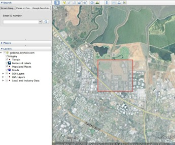
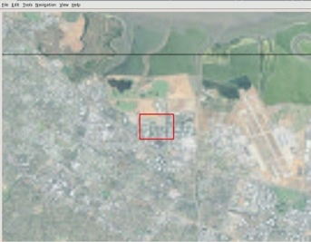

Google Earth Enterprise Documentation Home | Fusion resources and projects
Import a subset of imagery
You can import a single area of a source image to Fusion as a new, smaller image file. For example, shown below is a compressed, high-resolution MrSID source image of Santa Clara County, California. On a standard server machine, it would take several hours to import this entire image to Fusion.
If you don't need the entire image, you can select an area of the image to import, then use getranslate -projwin to extract the area and create a new image from it. The -projwin parameter reads the coordinates of the bounding box you specify and writes out your selection as a new image. The coordinates are based on the native projection in the source image. You can use Google Earth to easily find corner coordinates for the area you want to copy. (To learn how, see Find & use location coordinates in the Google Earth Help.) The getranslate tool, extended from the GDAL gdal_translate tool, includes support for JPEG2000 format source imagery.

Example of importing a subset of imagery
The source file shown below is in a UTM projection (UTM Zone 10N, NAD83 Datum) and references coordinates in meters. You can use Google Earth to locate coordinates for the upper left (580907.14 E & 4142271.64 N) and lower right (581788.04 E & 4141453.58 N) corners of the area you want to import. Then you can specify the coordinate values, the output format (for example, a file type like GeoTIFF, MrSID, or JPEG2000), and the projection (using the -a_srs option) for the new image. The command looks something like this:
/opt/google/bin/getranslate -of HFA -projwin 580907.14 4142271.64 581788.04 4141453.58 /path/to/input.sid /path/to/output.img

The resulting output.img file contains imagery for the area you specified with -projwin:

You can compare the size of the original image with the extracted area, as shown below:
getranslate command options
usage: getranslate [options] <input> <output>
Supported options are:
--help|-? : Show this usage message
--formats : Show supported formats and exit
-ot <Byte|Int16|UInt16|UInt32|Int32|Float32|Float64
|CInt16|CInt32|CFloat32|CFloat64>
: Pixel type of output (default: match input)
-not_strict
-of <format>
: File format of output (default: GTiff) -b <band>
: Specifies band to copy (1 based indexing). Can be:
specified multiple times. (e.g. "-b 3 -b 2 -b 1")
will reverse the bands.
-outsize <xsize[%]> <ysize[%]>
: Size of the output image (pixels or % of original).
-scale [<src_min> <src_max> [<dst_min> <dst_max>]]
: Scale the input pixels values -srcwin <xoff> <yoff> <xsize> <ysize>
: Select sub window from input
-a_srs <projection>
: Assign specified projection to the output
<projection> can be:
NAD27|NAD83|WGS84|WGS72
EPSG:<num>
<PROJ.4 definition>
<OpenGIS Well Known Text>
<filename of file with OpenGIS Well Known Text>
ESRI::<ESRI Well Known Text File(.prj)>
-projwin <ulx> <uly> <lrx> <lry>
: Select sub window from input. Like -srcwin but uses
georeferenced coordinates -co "NAME=VALUE"*
: Pass construction arguments to output GDAL dataset
-mo "META-TAG=VALUE"*
: Meta information to be included in the output
-quiet
Utilizes GDAL 2.1.2, released October 2016